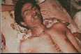
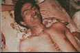

|
Greets
Mr_Sweet , AntiChrist , Devil-C , cynic , 139_r00ted , v00d00 ,
McIntyre , ULG ,
LevelSeven , bl0w team , ALOC , ne0h , HiP , Xessor , mistuh clean
, exode , lyp0x ,
Da^Bomb , mozy , k0ld , HIT2000 , HCV , un1x b0wl1ng t34m , hacksta
, syxx ,
cult_hero , dr_fdisk^ , Hi-Tech Hate , gH , team spl0it , Stonehenge
Crew , FL3M ,
attrition.org , hackernews.com , dutchthreat.org , projectgamma.com
, net-security.org
and all the others i miss..
|

 
